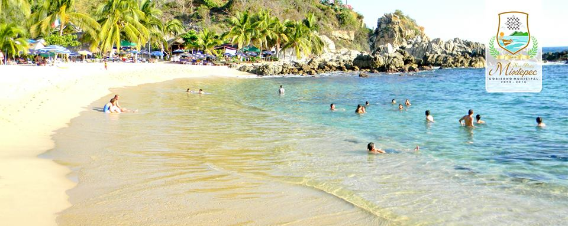

Playa Manzanillo

Ofrece las mismas características de oleaje que Puerto Angelito. Es ideal para tomas baños de sol y snorkel. Hay servicio de restaurantes, palapas y renta de parasoles.
Es una atractiva playa, cuyas dimensiones aproximadas son de 70 metros de largo por 30 metros de ancho. Su arena es fina, de color blanco, con poca pendiente; el agua es templada, transparente y de tonalidades verdes y azules; tiene poca profundidad y oleaje moderado.
El lugar es apropiado para practicar la natación, el snorkel y los baños de sol. Es un sitio ideal para practicar el buceo libre al igual que playa Puerto Angelito y playa Carrizalillo. Estos sitios presentan condiciones óptimas para la práctica de éste deporte; presentan bastante transparencia, poca profundidad, oleaje tranquilo y temperatura templada.
Se contemplan bellos paisajes submarinos, constituidos principalmente por la flora y fauna marina y el fondo rocoso y arenoso. Existe renta de equipos para buceo libre (snorkel).
Se puede llegar por Puerto Angelito, sin embargo hay que atravesar caminando una pequeña lomita de aproximadamente 60 metros. La otra opción es tomar la calle Tercera Poniente y doblar a la derecha al llegar al cruce con la calle 5a. Sur. Al finalizar la calle deberá bajar por una escaleras de piedra con pendiente pronunciada.